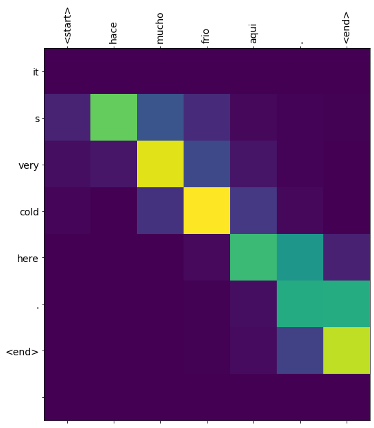
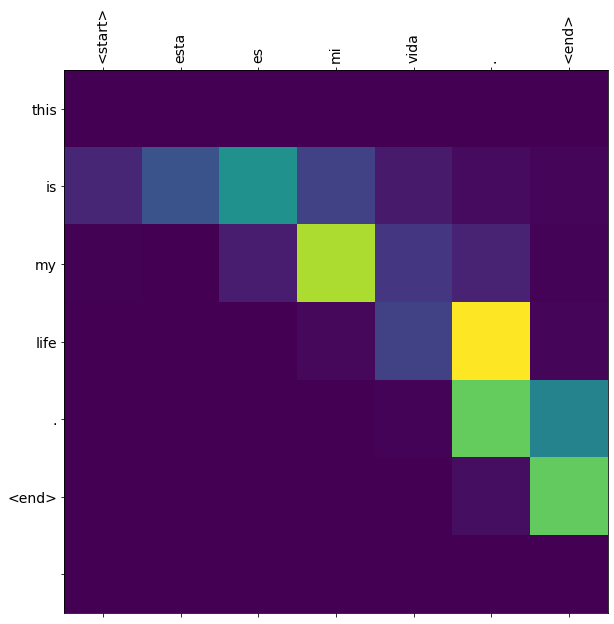
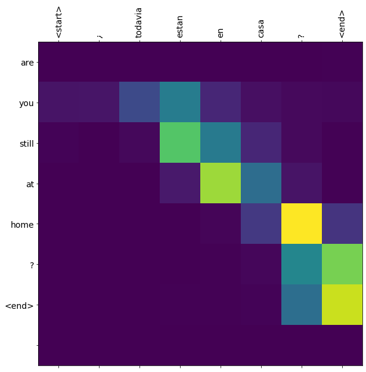
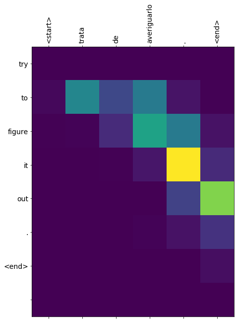

基于seq2seq的西班牙语到英语的机器翻译任务
学习目标¶
- 了解机器翻译任务及其相关数据集.
- 掌握使用基于GRU的seq2seq模型架构实现翻译的过程.
- 掌握Attention机制在解码器端的实现过程.
任务说明¶
- 机器翻译任务是NLP领域最为经典且应用最广泛的任务之一，仅google的在线翻译系统每天请求量就已经过亿。当前最好的机器翻译系统正是使用深度学习技术解决各项难题，同时也将经典的seq2seq架构推广到各个领域，再加上近今年来风靡的Attention机制，使得机器翻译能力迅猛提升。下面我们将学习基于seq2seq模型架构和Attention 机制，完成西班牙语到英语的机器翻译案例。
数据集说明¶
- 数据集名称: Anki (安基翻译数据集)
- 原数据集下载地址: http://www.manythings.org/anki/spa-eng.zip
- 数据集下载地址: http://storage.googleapis.com/download.tensorflow.org/data/spa-eng.zip
- 数据集预览:
Go. Ve.
Go. Vete.
Go. Vaya.
Go. Váyase.
Hi. Hola.
Run! ¡Corre!
Run. Corred.
Who? ¿Quién?
Fire! ¡Fuego!
Fire! ¡Incendio!
Fire! ¡Disparad!
- 数据内容说明:
- 数据总条目为: 118964，第一列为英语，第二列为对应翻译的西班牙语.
使用基于GRU的seq2seq模型架构实现翻译的过程¶
- 第一步：下载和准备训练数据集
- 第二步：对数据进行预处理并创建一个tf.data数据集
- 第三步：构建模型并选择优化器和损失函数
- 第四步：构建训练函数并进行训练
- 第五步：构建评估函数并进行预测分析
第一步：下载和准备训练数据集¶
from __future__ import absolute_import, division, print_function, unicode_literals
import tensorflow as tf
# 打印tensorflow版本
print("Tensorflow Version:", tf.__version__)
# 导入之后绘制Attention效果图的工具包
import matplotlib.pyplot as plt
import matplotlib.ticker as ticker
# 导入sklearn中的相关工具以便进行训练集与验证集划分
from sklearn.model_selection import train_test_split
# 导入一些必备的文本清洗工具包
import unicodedata
import re
import numpy as np
import os
import io
import time
# 使用tf.keras工具中get_file方法下载文件
# 'spa-eng.zip'是下载的文件名
# origin表示文件下载地址, extract表示是否对文件进行解压缩
# 进行解压缩后, 获得压缩包的地址path_to_zip
path_to_zip = tf.keras.utils.get_file(
'spa-eng.zip', origin='http://storage.googleapis.com/download.tensorflow.org/data/spa-eng.zip',
extract=True)
# 获得解压缩的标注文件地址
path_to_file = os.path.dirname(path_to_zip)+"/spa-eng/spa.txt"
- 输出效果:
Tensorflow Version: 2.1.0-rc2
Downloading data from http://storage.googleapis.com/download.tensorflow.org/data/spa-eng.zip
2646016/2638744 [==============================] - 0s 0us/step
第二步：对数据进行预处理并创建一个tf.data数据集¶
- 对文本进行清洗并给每个句子添加一个 开始 和一个 结束 标记:
# 将 unicode 文件转换为 ascii
# 我们可以认为是去掉一些语言中的重音标记：如Ślusàrski--->Slusarski
def unicode_to_ascii(s):
return ''.join(c for c in unicodedata.normalize('NFD', s)
if unicodedata.category(c) != 'Mn')
def preprocess_sentence(w):
"""句子处理函数, 输入为原始语料的一句话"""
# 字母小写并去除两侧空白符，调用unicode_to_ascii
w = unicode_to_ascii(w.lower().strip())
# 在单词与跟在其后的标点符号之间插入一个空格
# 例如： "he is a boy." => "he is a boy ."
w = re.sub(r"([?.!,¿])", r" \1 ", w)
w = re.sub(r'[" "]+', " ", w)
# 除了 (a-z, A-Z, ".", "?", "!", ",")，将所有字符替换为空格
w = re.sub(r"[^a-zA-Z?.!,¿]+", " ", w)
# 替换后再次去除两侧空白符
w = w.rstrip().strip()
# 给句子加上开始和结束标记
# 以便模型知道何时开始和结束预测
w = '<start> ' + w + ' <end>'
return w
- 调用:
en_sentence = u"May I borrow this book?"
sp_sentence = u"¿Puedo tomar prestado este libro?"
print(preprocess_sentence(en_sentence))
print(preprocess_sentence(sp_sentence).encode('utf-8'))
- 输出效果:
<start> may i borrow this book ? <end>
b'<start> \xc2\xbf puedo tomar prestado este libro ? <end>'
- 创建对应的翻译文本集
def create_dataset(path, num_examples):
"""
description: 创建对应的翻译文本集：共包含两个元组，第一个元组中都是英文，
第二个元组中都是对应的西班牙文
:param path: 数据集路径
:param num_examples: 取数据集中的文本行数
"""
# 读取持久化文件中的全部行
lines = io.open(path, encoding='UTF-8').read().strip().split('\n')
# 取指定行数的数据并调用preprocess_sentence函数处理
pairs = [[preprocess_sentence(w) for w in l.split('\t')] for l in lines[:num_examples]]
# 将两组文本整合在一个zip对象中
return zip(*pairs)
- 调用:
path = path_to_file
num_examples = 5
en, sp = create_dataset(path, num_examples)
print(en)
print(sp)
- 输出效果:
# 第一个元组都是英文句子(因为我们取的是数据集前面的句子，一个单词就是一个句子)
('<start> go . <end>', '<start> go . <end>', '<start> go . <end>', '<start> go . <end>', '<start> hi . <end>')
# 第二个元组都是对应西班牙文句子
('<start> ve . <end>', '<start> vete . <end>', '<start> vaya . <end>', '<start> vayase . <end>', '<start> hola . <end>')
- 对文本进行数值映射并进行最大长度补齐
def max_length(tensor):
"""获取tensor中的最大长度函数"""
return max(len(t) for t in tensor)
def tokenize(lang):
"""对文本进行数值映射函数"""
# 实例化一个Tokenizer数值映射器
lang_tokenizer = tf.keras.preprocessing.text.Tokenizer(
filters='')
# 在输入文本上拟合映射器
lang_tokenizer.fit_on_texts(lang)
# 将映射器作用在当前文本上
tensor = lang_tokenizer.texts_to_sequences(lang)
# 使用pad_sequences对文本进行最大长度补齐
tensor = tf.keras.preprocessing.sequence.pad_sequences(tensor,
padding='post')
# 返回处理后的结果和映射器(因为在之后的预测中还会使用该映射器处理文本)
return tensor, lang_tokenizer
def load_dataset(path, num_examples=None):
"""对两种语言文本进行进行数值映射并进行最大长度补齐"""
# 获得文本清洗之后的结果
targ_lang, inp_lang = create_dataset(path, num_examples)
# 分别调用tokenize函数
input_tensor, inp_lang_tokenizer = tokenize(inp_lang)
target_tensor, targ_lang_tokenizer = tokenize(targ_lang)
# 返回对应的结果
return input_tensor, target_tensor, inp_lang_tokenizer, targ_lang_tokenizer
- 调用:
path = path_to_file
num_examples = 5
input_tensor, target_tensor, inp_lang_tokenizer, targ_lang_tokenizer = load_dataset(path, num_examples)
print("input_tensor:", input_tensor)
print("target_tensor:", target_tensor)
print(inp_lang_tokenizer)
print(targ_lang_tokenizer)
- 输出效果:
input_tensor: [[1 4 2 3]
[1 5 2 3]
[1 6 2 3]
[1 7 2 3]
[1 8 2 3]]
target_tensor: [[1 4 2 3]
[1 4 2 3]
[1 4 2 3]
[1 4 2 3]
[1 5 2 3]]
<keras_preprocessing.text.Tokenizer object at 0x7f7c305f3b50>
<keras_preprocessing.text.Tokenizer object at 0x7f7cbe903090>
- 限制训练集的大小以保证在可控时间内完成训练
- 为了加快训练速度，将使用30,000个训练子集来训练模型。如果你的硬件资源足够充分，也可以选择使用更多数据来提高模型质量。如果在一个P100 GPU 上运行10万条数据大约花费10分钟左右。
# 尝试实验不同大小的数据集
# 这里使用30000个样本
num_examples = 30000
input_tensor, target_tensor, inp_lang, targ_lang = load_dataset(path_to_file, num_examples)
# 计算目标张量的最大长度 （max_length）
max_length_targ, max_length_inp = max_length(target_tensor), max_length(input_tensor)
# 采用 8:2 的比例切分训练集和验证集
input_tensor_train, input_tensor_val, target_tensor_train, target_tensor_val = train_test_split(input_tensor, target_tensor, test_size=0.2)
# 训练集和验证集的样本数量
print(len(input_tensor_train), len(target_tensor_train), len(input_tensor_val), len(target_tensor_val))
- 输出效果:
24000 24000 6000 6000
- 查看一下数值映射后样本的对应情况:
def convert(lang, tensor):
# 遍历张量中的每一个数值
for t in tensor:
# 数值映射从1开始，不包括0
if t!=0:
# 使用传入的数值映射器的index_word方法寻找数值对应的单词
print ("%d ----> %s" % (t, lang.index_word[t]))
print ("输入文本的对应情况:")
convert(inp_lang, input_tensor_train[0])
print ()
print ("输出文本的对应情况:")
convert(targ_lang, target_tensor_train[0])
- 输出效果:
Input Language; index to word mapping
1 ----> <start>
2605 ----> mande
19 ----> mi
280 ----> reloj
10 ----> a
2342 ----> arreglar
3 ----> .
2 ----> <end>
Target Language; index to word mapping
1 ----> <start>
4 ----> i
99 ----> had
21 ----> my
177 ----> watch
1002 ----> fixed
3 ----> .
2 ----> <end>
- 创建一个tf.data数据集对象
# 为了方便之后的训练，都需要将数据集转化成tf.data数据集对象，这已经成为了使用tf.keras进行模型训练前的标准步骤!
# 设置超参数
BUFFER_SIZE = len(input_tensor_train)
BATCH_SIZE = 64
steps_per_epoch = len(input_tensor_train)//BATCH_SIZE
embedding_dim = 256
units = 1024
vocab_inp_size = len(inp_lang.word_index)+1
vocab_tar_size = len(targ_lang.word_index)+1
# 转化成tf.data的dataset形式
dataset = tf.data.Dataset.from_tensor_slices((input_tensor_train, target_tensor_train)).shuffle(BUFFER_SIZE)
# 进行批次化，drop_remainder=True代表舍弃最后一个批次可能不满足batch_size大小的数据
dataset = dataset.batch(BATCH_SIZE, drop_remainder=True)
# 取出一组样例数据查看一下，现将dataset封装成迭代器，再用next方法取出一个
example_input_batch, example_target_batch = next(iter(dataset))
# 打印结果
print(example_input_batch.shape, example_target_batch.shape)
- 输出效果:
TensorShape([64, 16]), TensorShape([64, 11])
第三步：构建模型并选择优化器和损失函数¶
- 构建模型的编码器部分:
class Encoder(tf.keras.Model):
def __init__(self, vocab_size, embedding_dim, enc_units, batch_sz):
"""
:param vocab_size: 非重复的词汇总数
:param embedding_dim: 词嵌入的维度
:enc_units: 编码器中GRU层的隐含节点数
:batch_sz: 数据批次大小(每次参数更新用到的数据量)
"""
super(Encoder, self).__init__()
# 将变量传入类中
self.batch_sz = batch_sz
self.enc_units = enc_units
# 实例化embedding层
self.embedding = tf.keras.layers.Embedding(vocab_size, embedding_dim)
# 实例化gru层
# return_sequences=True代表返回GRU序列模型的每个时间步的输出(每个输出做连接操作)
# return_state=True代表除了返回输出外，还需要返回最后一个隐层状态
# recurrent_initializer='glorot_uniform'即循环状态张量的初始化方式为均匀分布
self.gru = tf.keras.layers.GRU(self.enc_units,
return_sequences=True,
return_state=True,
recurrent_initializer='glorot_uniform')
def call(self, x, hidden):
# 对输入进行embedding操作
x = self.embedding(x)
# 通过gru层获得最后一个时间步的输出和隐含状态
output, state = self.gru(x, initial_state = hidden)
return output, state
def initialize_hidden_state(self):
# gru层的隐含节点对应的参数张量以零张量初始化
return tf.zeros((self.batch_sz, self.enc_units))
- 调用:
# 实例化encoder
encoder = Encoder(vocab_inp_size, embedding_dim, units, BATCH_SIZE)
# 样本输入
sample_hidden = encoder.initialize_hidden_state()
sample_output, sample_hidden = encoder(example_input_batch, sample_hidden)
print ('Encoder output shape: (batch size, sequence length, units) {}'.format(sample_output.shape))
print ('Encoder Hidden state shape: (batch size, units) {}'.format(sample_hidden.shape))
- 输出效果:
Encoder output shape: (batch size, sequence length, units) (64, 16, 1024)
Encoder Hidden state shape: (batch size, units) (64, 1024)
- 构建注意力机制的类:
- 注意力机制的计算规则遵循以下公式:


- 构建注意力机制类的伪代码:
# 这里使用Bahdanau 注意力机制
1, score = FC(tanh(FC(EO) + FC(H)))
2, attention weights = softmax(score, axis = 1).
# 解释: Softmax 默认被应用于最后一个轴，但是这里我们想将它应用于第一个轴,
# 因为分数 （score） 的形状是 (批大小，最大长度，隐层大小)，最大长度 （max_length） 是输入的长度。
# 因为我们想为每个输入长度分配一个权重，所以softmax应该用在这个轴上。
3, context vector = sum(attention weights * EO, axis = 1)
# 解释: 选择第一个轴的原因同上.
4, embedding output = 解码器输入 X 通过一个嵌入层
5, merged vector = concat(embedding output, context vector)
符号代表:
FC: 全连接层
EO: 编码器输出
H: 隐藏层状态
X: 解码器输入
- 构建注意力机制类:
class BahdanauAttention(tf.keras.layers.Layer):
def __init__(self, units):
super(BahdanauAttention, self).__init__()
self.W1 = tf.keras.layers.Dense(units)
self.W2 = tf.keras.layers.Dense(units)
self.V = tf.keras.layers.Dense(1)
def call(self, query, values):
# 隐藏层的形状 == （批大小，隐藏层大小）
# hidden_with_time_axis 的形状 == （批大小，1，隐藏层大小）
# 这样做是为了执行加法以计算分数
hidden_with_time_axis = tf.expand_dims(query, 1)
# 分数的形状 == （批大小，最大长度，1）
# 我们在最后一个轴上得到 1， 因为我们把分数应用于 self.V
# 在应用 self.V 之前，张量的形状是（批大小，最大长度，单位）
score = self.V(tf.nn.tanh(
self.W1(values) + self.W2(hidden_with_time_axis)))
# 注意力权重 （attention_weights） 的形状 == （批大小，最大长度，1）
attention_weights = tf.nn.softmax(score, axis=1)
# 上下文向量 （context_vector） 求和之后的形状 == （批大小，隐藏层大小）
context_vector = attention_weights * values
context_vector = tf.reduce_sum(context_vector, axis=1)
return context_vector, attention_weights
- 调用:
attention_layer = BahdanauAttention(10)
attention_result, attention_weights = attention_layer(sample_hidden, sample_output)
print("Attention result shape: (batch size, units) {}".format(attention_result.shape))
print("Attention weights shape: (batch_size, sequence_length, 1) {}".format(attention_weights.shape))
- 输出效果:
Attention result shape: (batch size, units) (64, 1024)
Attention weights shape: (batch_size, sequence_length, 1) (64, 16, 1)
- 构建RNN解码器:
- 这里RNN是指GRU, 同时在解码器中使用注意力机制.
class Decoder(tf.keras.Model):
def __init__(self, vocab_size, embedding_dim, dec_units, batch_sz):
super(Decoder, self).__init__()
# 所有的参数传递和实例化方法与编码器相同
self.batch_sz = batch_sz
self.dec_units = dec_units
self.embedding = tf.keras.layers.Embedding(vocab_size, embedding_dim)
self.gru = tf.keras.layers.GRU(self.dec_units,
return_sequences=True,
return_state=True,
recurrent_initializer='glorot_uniform')
# 实例化一个Dense层作为输出层
self.fc = tf.keras.layers.Dense(vocab_size)
# 在解码器阶段我们将使用注意力机制，这里实例化注意力的类
self.attention = BahdanauAttention(self.dec_units)
def call(self, x, hidden, enc_output):
"""
:param x: 每个时间步上解码器的输入
:param hidden: 每次解码器的隐层输出
:param enc_output: 编码器的输出
"""
# 输入通过embedding层
x = self.embedding(x)
# 使用注意力规则计算hidden与enc_output的'相互影响程度'
context_vector, attention_weights = self.attention(hidden, enc_output)
# 将这种'影响程度'与输入x拼接(这个操作也是注意力计算规则的一部分)
x = tf.concat([tf.expand_dims(context_vector, 1), x], axis=-1)
# 将新的x输入到gru层中得到输出
output, state = self.gru(x)
# 改变输出形状使其适应全连接层的输入形式
output = tf.reshape(output, (-1, output.shape[2]))
# 使用全连接层作为输出层
# 输出的形状 == （批大小，vocab）
x = self.fc(output)
return x, state, attention_weights
- 调用:
decoder = Decoder(vocab_tar_size, embedding_dim, units, BATCH_SIZE)
sample_decoder_output, _, _ = decoder(tf.random.uniform((64, 1)),
sample_hidden, sample_output)
print ('Decoder output shape: (batch_size, vocab size) {}'.format(sample_decoder_output.shape))
- 输出效果:
Decoder output shape: (batch_size, vocab size) (64, 4935)
- 选取优化方法和损失函数:
# 选取Adam优化方法
optimizer = tf.keras.optimizers.Adam()
# 损失基本计算方法为稀疏类别交叉熵损失
# from_logits=True代表是否将预测结果预期为非 0/1 的值进行保留
# 理论来讲二分类最终的结果应该只有0/1，函数将自动将其变为0/1，from_logits=True后，值不会被改变
# reduction='none'，接下来我们将自定义损失函数，reduction必须设置为None，
# 我们可以将它看作是自定义损失函数的识别属性
loss_object = tf.keras.losses.SparseCategoricalCrossentropy(
from_logits=True, reduction='none')
# 因为每次生成的结果都是局部结果，要和真实结果进行比较需要对真实结果进行遮掩
# 等效于对损失计算结果进行掩码
def loss_function(real, pred):
"""自定义损失函数，参数为预测结果pred和真实结果real"""
# 使用tf.math.equal方法对real和0进行对比
# 对结果再进行逻辑非操作生成掩码张量mask
mask = tf.math.logical_not(tf.math.equal(real, 0))
# 使用基本计算方法计算损失
loss_ = loss_object(real, pred)
# 将mask进行类型转换，使其能够进行后续操作
mask = tf.cast(mask, dtype=loss_.dtype)
# 将loss_与mask相乘即对loss_进行掩码
loss_ *= mask
# 计算loss_张量所有元素的均值
return tf.reduce_mean(loss_)
- 创建检测点保存对象:
# 定义检测点（每个阶段训练的模型）保存路径
checkpoint_dir = './training_checkpoints'
checkpoint_prefix = os.path.join(checkpoint_dir, "ckpt")
# 使用tf.train.Checkpoint创建检测点保存对象
# 我们会在之后的训练中调用它来保存模型
checkpoint = tf.train.Checkpoint(optimizer=optimizer,
encoder=encoder,
decoder=decoder)
第四步: 构建训练函数并进行训练¶
- 构建训练函数:
@tf.function # 该装饰器使该函数自动编译张量图, 使其可以直接执行
def train_step(inp, targ, enc_hidden):
# 设定初始损失为0
loss = 0
# 开启一个用于梯度记录的上下文管理器
with tf.GradientTape() as tape:
# 调用编码器部分得到编码器输出和编码器隐层输出
enc_output, enc_hidden = encoder(inp, enc_hidden)
# 将编码器隐层输出设定为解码器的初始隐层状态
dec_hidden = enc_hidden
# 以'起始符'作为解码器的第一个输入字符
dec_input = tf.expand_dims([targ_lang.word_index['<start>']] * BATCH_SIZE, 1)
# 开始循环解码过程
for t in range(1, targ.shape[1]):
# 使用解码器获得新的解码器隐层输出(状态)，以及预测结果
predictions, dec_hidden, _ = decoder(dec_input, dec_hidden, enc_output)
# 使用损失函数计算本次训练过程的损失
loss += loss_function(targ[:, t], predictions)
# 使用teacher-forcing矫正可能的错误结果
# 直接将正确结果作为下一次循环的输入
dec_input = tf.expand_dims(targ[:, t], 1)
# 计算每次batch的平均损失
batch_loss = (loss / int(targ.shape[1]))
# 获得整个模型训练的参数变量
variables = encoder.trainable_variables + decoder.trainable_variables
# 使用梯度记录管理器求解整个网络的梯度，参数是loss和全部参数变量
gradients = tape.gradient(loss, variables)
# 根据梯度更新参数
optimizer.apply_gradients(zip(gradients, variables))
# 返回每次batch的平均损失
return batch_loss
-
什么是teacher_forcing?
- 它是一种用于序列生成任务的训练技巧, 在seq2seq架构中, 根据循环神经网络理论，解码器每次应该使用上一步的结果作为输入的一部分, 但是训练过程中，一旦上一步的结果是错误的，就会导致这种错误被累积，无法达到训练效果, 因此，我们需要一种机制改变上一步出错的情况，因为训练时我们是已知正确的输出应该是什么，因此可以强制将上一步结果设置成正确的输出, 这种方式就叫做teacher_forcing.
-
teacher_forcing的作用:
- 能够在训练的时候矫正模型的预测，避免在序列生成的过程中误差进一步放大.
- teacher_forcing能够极大的加快模型的收敛速度，令模型训练过程更快更平稳.
- 进行训练并打印日志:
# 设置训练轮数
EPOCHS = 10
for epoch in range(EPOCHS):
# 获得每轮训练的开始时间
start = time.time()
# 初始化编码器隐含状态
enc_hidden = encoder.initialize_hidden_state()
# 初始化总损失为0
total_loss = 0
# 循环数据集中的每个批次进行训练
for (batch, (inp, targ)) in enumerate(dataset.take(steps_per_epoch)):
# 调用train_step函数获得批次平均损失
batch_loss = train_step(inp, targ, enc_hidden)
# 将批次平均损失相加获得轮数总损失
total_loss += batch_loss
# 每100个批次打印一次批次平均损失
if batch % 100 == 0:
print('Epoch {} Batch {} Loss {:.4f}'.format(epoch + 1,
batch,
batch_loss.numpy()))
# 每两轮（epoch），保存一次模型
if (epoch + 1) % 2 == 0:
checkpoint.save(file_prefix = checkpoint_prefix)
# 打印轮数平均损失
print('Epoch {} Loss {:.4f}'.format(epoch + 1,
total_loss / steps_per_epoch))
# 打印模型训练耗时
print('Time taken for 1 epoch {} sec\n'.format(time.time() - start))
- 输出效果:
Epoch 1 Batch 0 Loss 4.6268
Epoch 1 Batch 100 Loss 2.1385
Epoch 1 Batch 200 Loss 1.8945
Epoch 1 Batch 300 Loss 1.7187
Epoch 1 Loss 2.0145
Time taken for 1 epoch 34.930274963378906 sec
Epoch 2 Batch 0 Loss 1.5522
Epoch 2 Batch 100 Loss 1.3454
Epoch 2 Batch 200 Loss 1.3791
Epoch 2 Batch 300 Loss 1.3919
Epoch 2 Loss 1.3569
Time taken for 1 epoch 17.682456016540527 sec
Epoch 3 Batch 0 Loss 1.0861
Epoch 3 Batch 100 Loss 1.0815
Epoch 3 Batch 200 Loss 0.9158
Epoch 3 Batch 300 Loss 0.8474
Epoch 3 Loss 0.9312
Time taken for 1 epoch 17.20573592185974 sec
Epoch 4 Batch 0 Loss 0.6689
Epoch 4 Batch 100 Loss 0.5476
Epoch 4 Batch 200 Loss 0.5617
Epoch 4 Batch 300 Loss 0.5462
Epoch 4 Loss 0.6193
Time taken for 1 epoch 17.651796579360962 sec
Epoch 5 Batch 0 Loss 0.3442
Epoch 5 Batch 100 Loss 0.3203
Epoch 5 Batch 200 Loss 0.4267
Epoch 5 Batch 300 Loss 0.4384
Epoch 5 Loss 0.4171
Time taken for 1 epoch 17.20345664024353 sec
Epoch 6 Batch 0 Loss 0.2950
Epoch 6 Batch 100 Loss 0.3294
Epoch 6 Batch 200 Loss 0.3228
Epoch 6 Batch 300 Loss 0.2724
Epoch 6 Loss 0.2861
Time taken for 1 epoch 17.587135076522827 sec
Epoch 7 Batch 0 Loss 0.1584
Epoch 7 Batch 100 Loss 0.1876
Epoch 7 Batch 200 Loss 0.1844
Epoch 7 Batch 300 Loss 0.1919
Epoch 7 Loss 0.2025
Time taken for 1 epoch 17.285163402557373 sec
Epoch 8 Batch 0 Loss 0.1315
Epoch 8 Batch 100 Loss 0.1640
Epoch 8 Batch 200 Loss 0.1424
Epoch 8 Batch 300 Loss 0.1343
Epoch 8 Loss 0.1482
Time taken for 1 epoch 17.918259382247925 sec
Epoch 9 Batch 0 Loss 0.1118
Epoch 9 Batch 100 Loss 0.1030
Epoch 9 Batch 200 Loss 0.0644
Epoch 9 Batch 300 Loss 0.1106
Epoch 9 Loss 0.1172
Time taken for 1 epoch 17.48120665550232 sec
Epoch 10 Batch 0 Loss 0.0853
Epoch 10 Batch 100 Loss 0.0803
Epoch 10 Batch 200 Loss 0.0681
Epoch 10 Batch 300 Loss 0.0957
Epoch 10 Loss 0.0951
Time taken for 1 epoch 17.945307970046997 sec
第五步：构建评估函数并进行预测分析¶
- 构建评估函数:
def evaluate(sentence):
"""
description: 评估函数
:param sentence: 待翻译的句子
"""
# 初始化用于绘制注意力效果图的张量
attention_plot = np.zeros((max_length_targ, max_length_inp))
# 下面将对输入文本做与训练语料同样的操作
# 对输入的句子进行文本预处理
sentence = preprocess_sentence(sentence)
# 使用输入数值映射器对文本进行数值化映射
inputs = [inp_lang.word_index[i] for i in sentence.split(' ')]
# 对文本进行最大长度补齐
inputs = tf.keras.preprocessing.sequence.pad_sequences([inputs],
maxlen=max_length_inp,
padding='post')
# 转换成张量
inputs = tf.convert_to_tensor(inputs)
# 定义翻译后的结果变量
result = ''
# 初始化编码器的隐层状态
hidden = [tf.zeros((1, units))]
# 使用编码器进行编码
enc_out, enc_hidden = encoder(inputs, hidden)
# 将编码器隐层输出设定为解码器的初始隐层状态
dec_hidden = enc_hidden
# 以'起始符'作为解码器的第一个输入字符
dec_input = tf.expand_dims([targ_lang.word_index['<start>']], 0)
# 开始循环解码，过程和训练时十分类似
for t in range(max_length_targ):
predictions, dec_hidden, attention_weights = decoder(dec_input,
dec_hidden,
enc_out)
# 存储每次产生的注意力权重以便后面制图
attention_weights = tf.reshape(attention_weights, (-1, ))
attention_plot[t] = attention_weights.numpy()
# 从预测分布中获得概率最大预测id
predicted_id = tf.argmax(predictions[0]).numpy()
# 使用目标数值映射器将其还原为对应的文本(单词/标识)
result += targ_lang.index_word[predicted_id] + ' '
# 如果解码还原后为'终止符'，则返回结果
if targ_lang.index_word[predicted_id] == '<end>':
return result, sentence, attention_plot
# 否则，预测id被输送回模型，作为下一次预测输入
dec_input = tf.expand_dims([predicted_id], 0)
# 返回预测结果，原始输入文本，以及整个过程的注意力张量组合(仍然是一个张量)
return result, sentence, attention_plot
def plot_attention(attention, sentence, predicted_sentence):
"""
description: 注意力张量制图函数
:param attention: 整个过程的注意力张量组合
:param sentence: 原始输入文本
:param predicted_sentence: 预测结果
"""
# 打开一个10x10的画布
fig = plt.figure(figsize=(10,10))
# 在画布上创建1x1的子画布
ax = fig.add_subplot(1, 1, 1)
# 绘制子画布上绘制矩形，根据给出输入数值不同，颜色也不相同
# cmap='viridis'是一种矩形的色彩填充方案‘绿藻’
ax.matshow(attention, cmap='viridis')
# 定义字体规范字典，这里我们只要求字体大小即可
fontdict = {'fontsize': 14}
# 使用x轴设置方法使输入文本在x轴上显示
# rotation=90代表有90度的倾斜角，便于观看
ax.set_xticklabels([''] + sentence, fontdict=fontdict, rotation=90)
# 同样，使预测文本在y轴上显示
ax.set_yticklabels([''] + predicted_sentence, fontdict=fontdict)
# 设置x和y轴的刻度，与绘制时add_subplot的参数对应即可
ax.xaxis.set_major_locator(ticker.MultipleLocator(1))
ax.yaxis.set_major_locator(ticker.MultipleLocator(1))
# 绘图
plt.show()
- 调用:
def translate(sentence):
"""预测并绘图"""
# 调用评估函数获得结果
result, sentence, attention_plot = evaluate(sentence)
# 打印输入文本和预测文本
print('Input: %s' % (sentence))
print('Predicted translation: {}'.format(result))
# 根据文本长度对注意力张量进行剪裁(剪裁掉的都是0部分)
attention_plot = attention_plot[:len(result.split(' ')), :len(sentence.split(' '))]
# 进行注意力效果图绘制
plot_attention(attention_plot, sentence.split(' '), result.split(' '))
# 使用检测点对象恢复最近一次保存的模型
checkpoint.restore(tf.train.latest_checkpoint(checkpoint_dir))
# 翻译西班牙语‘这里很冷。’
translate(u'hace mucho frio aqui.')
# 翻译西班牙语‘这就是我的生活。’
translate(u'esta es mi vida.')
# 翻译西班牙语‘他们还在家里吗？’
translate(u'¿todavia estan en casa?')
# 翻译西班牙语‘尝试找出答案。’
translate(u'trata de averiguarlo.')
- 输出效果:
Input: <start> hace mucho frio aqui . <end>
Predicted translation: it s very cold here . <end>

Input: <start> esta es mi vida . <end>
Predicted translation: this is my life . <end>

Input: <start> ¿ todavia estan en casa ? <end>
Predicted translation: are you still at home ? <end>

Input: <start> trata de averiguarlo . <end>
Predicted translation: try to figure it out . <end>

- 注意力效果图分析:
- 图中x，y轴分别对应输入和输出文本，他们之间的影响使用明暗不同的矩形小方块表示，方块颜色越明亮(如黄色)，则代表输入对输出影响的作用越大。例如，对于输出英文单词”cold”, 在x轴方向共有三个较明亮的小方块，它们对应的输入单词分别是”mucho”，”frio”，”aqui”，说明生成单词”cold”由以上三个单词来绝对，与此同时，”frio”所对应的小方块最明亮，说明它对生成”cold”所产生的贡献最大。因此，我们可以根据人类语言知识对比效果图来判定模型的”思路”是否和我们一致。